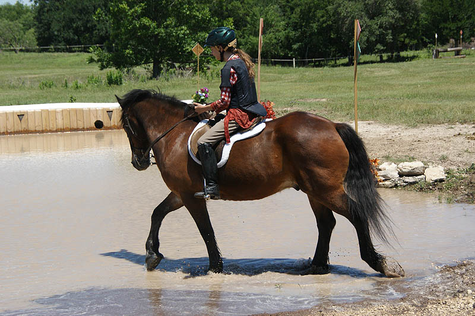
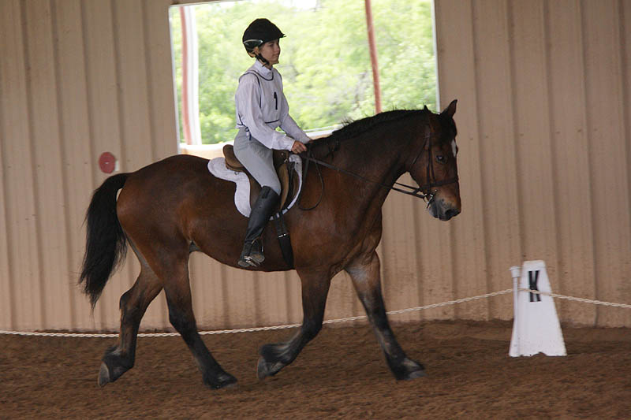
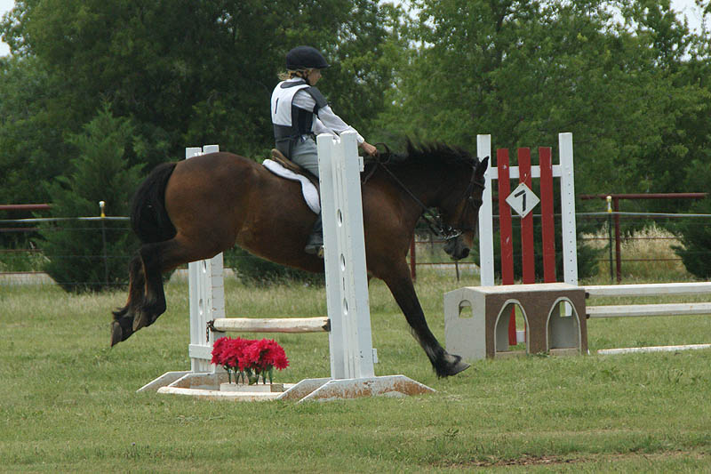
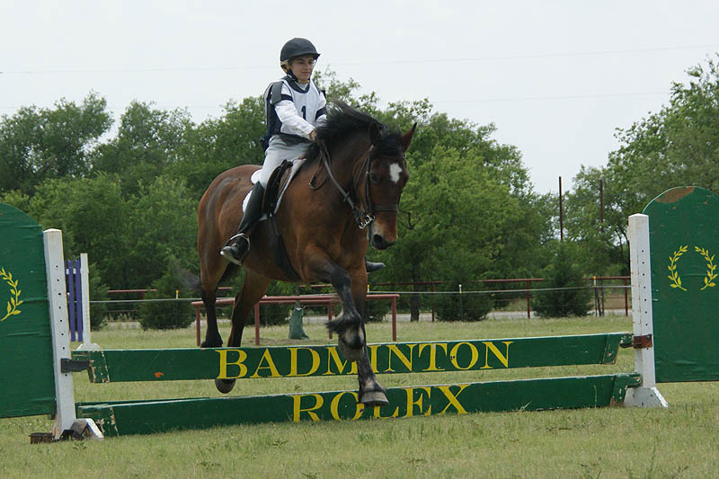
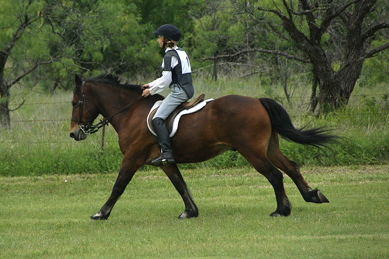

Horse Trial at Curragh
Amanda and Thuy competed at the Elementary Level. I think Amanda had more fun with the practice on Saturday
and Thuy had more fun at the competition. The came in 6th in their division. It was a long weekend, but they both did great.
Heading out Saturday to practice
the cross country course.
Amanda seeing her course for the first time.
Amanda said the first jump of the day was the best.
Thuy was happy to take her over.
She's never done solid jumps, but we knew Thuy could trot these if she wanted.
Delighted he saw no reason to jump the log at the top of the hill. Meg, Miaren and
I in the background watching.
A cheeky grin for the camera man.
She came out on the Beginner Novice course and kept jumping.
Thuy was happy to keep going.

He put a bit more effort into some of these.
I'm not sure which surprises me more. How much she makes Thuy look like a little
pony, or how grown up she has to be to make him look small. Definitely a different
look than the elegant hunt horse I ride.
She got a better feel for jumps with more effort.
They looked great going over this one. I was biting my nails as was the photographer.
Meg, the trainer, just grinned at us.
Thuy is great with water.
Amanda giving us a lead down the drop.

Thuy loves jumping into water.
Amanda didn't know the stop would be so sudden.
Whoops. She knew she couldn't hold on like this.
"Anyone want a hug." Boots full of water, she laughed the loudest of all.
Miaren had no trouble with the drop after watching Thuy and Amanda.

One more walk through.
A final fence with squishy boots and a damp saddle.
Their first dressage test together.
Picking up the trot at M.

Nice and calm.
Just a couple of whinnies for Miaren.
Checking and changing diagonals crossing the center line.
Ready to start the stretchy walk.

Thuy trying to take charge by the entrance.
Amanda got control and rode to X.
I think Thuy was looking around for Miaren at the halt (or trying to bite Amanda's
toe).
Warming up over the X. Thuy was willing to just trot it.
A little more forward and here comes the jump.
Next the oxer and Amanda concentrating to get him to canter away.
Heading to the first jump.
I think Thuy was happy to be on a course.
Amanda working to get a trot before the next fence, but then she decided it was
best to just hold on.
This one nicely from a trot.

A bit more eager over 4.
I think Amanda started to stay back in the saddle once Thuy started rolling. He
wasn't going to shift her with his jumping.
A blurry picture, but that is a grin to show that she was still in charge.

The last fence on course. Thuy knows his job.
Heading out on their cross country course. For anyone who's ridden Thuy, starting
at a walk can be a bit wobbly as he tests to see if he can pop a
shoulder and turn to go back to the barn.
Amanda won and got the trot heading to the first fence.
She also proved that she was in charge and he could trot the fences if she wanted.
So, she let him go a bit and let him jump number 2.
Tight in the saddle for 3.
Still determined as the go away from the gate again.
An eager jump for the ditch.
Back to the trot to prove her control.
Happy with the little effort over the log.

And a canter to the last jump and the finish flags.

Past the finish flags and telling Thuy he can whoa, but a bit tired to really push
the issue.